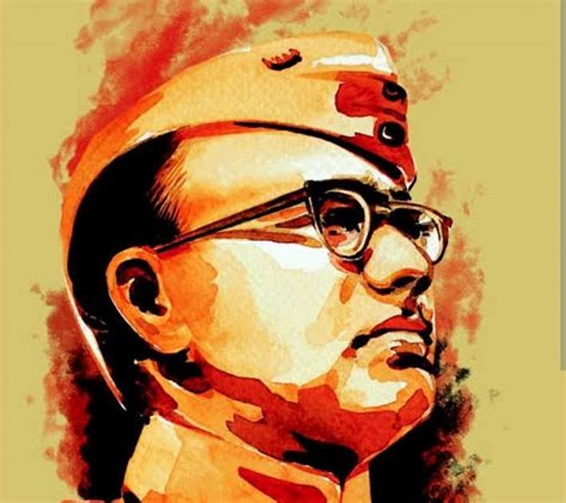

Netaji Subhas Chandra Bose
23 January 1897 – 18 August 1945
Biography
Introduction:
Subhas Chandra Bose, fondly known as Netaji, was a dynamic leader and a fervent nationalist who played a pivotal role in India's fight for independence from British colonial rule. Born on January 23, 1897, in Cuttack, India, Bose's life was a remarkable journey of courage, determination, and unwavering commitment to the cause of freedom. His contributions to the Indian independence movement, his leadership of the Indian National Army (INA), and his relentless pursuit of liberation have left an indelible mark on India's history. This essay delves into the life, ideology, and impact of Subhas Chandra Bose on the struggle for India's independence.
Early Life and Education:
Subhas Chandra Bose hailed from a well-educated and influential family. His father, Janakinath Bose, was a successful lawyer, and his mother, Prabhavati Devi, instilled in him a deep sense of patriotism and social responsibility. Bose completed his schooling in Cuttack and pursued higher education in Calcutta, where he excelled academically and displayed a keen interest in the freedom movement.
Influenced by Nationalism:
Bose was deeply influenced by the teachings of Swami Vivekananda and the ideas of self-reliance, nationalism, and spiritual strength. He was drawn to the Indian National Congress and its non-violent approach led by Mahatma Gandhi. However, as his understanding of India's struggle deepened, he began to differ with Gandhi's methods and advocated a more assertive and direct approach to attain independence.
Differences with Gandhi and the Indian National Congress:
Bose's belief in the need for a more aggressive stance led to a rift with Mahatma Gandhi and the Indian National Congress. He saw the potential for leveraging international support in the fight for India's freedom and thus sought help from Nazi Germany and Imperial Japan during World War II. This approach was met with both support and criticism, but Bose remained steadfast in his conviction that it was necessary to adopt whatever means available to free India from British rule.
The Formation of the Indian National Army (INA):
With the support of Japan, Bose established the Indian National Army (INA) in Southeast Asia. The INA comprised Indian prisoners of war and civilians who had sought refuge in countries like Singapore and Malaysia. Bose's charismatic leadership and powerful speeches resonated with the soldiers, instilling in them a sense of national pride and unity.
"Give me Blood, and I will give you Freedom":
Bose's rallying cry, "Tum mujhe khoon do, main tumhe azaadi dunga," encapsulated the spirit of sacrifice and dedication to the cause of freedom. He inspired his followers to be willing to make the ultimate sacrifice for the liberation of their motherland.
The Azad Hind Government:
In parallel with the INA, Bose also formed the Provisional Government of Free India, known as the Azad Hind Government. Bose assumed the title of "Netaji" and became the Supreme Commander of the INA and the Head of the Azad Hind Government. This government was seen as a symbol of an alternative authority that represented the aspirations of millions of Indians fighting for their independence.
The Mysterious Disappearance:
The Mysterious Disappearance:
In 1945, Bose's life took a tragic turn when he reportedly died in a plane crash in Taiwan. However, his death remains shrouded in mystery and controversy. Despite numerous theories and claims about his survival, conclusive evidence has yet to be produced, adding an enigmatic aura to his legacy.
Legacy:
Subhas Chandra Bose's legacy endures as one of India's most influential and dynamic leaders. His daring actions and dedication to India's freedom inspired countless individuals to join the struggle against British imperialism. Even today, he is remembered as an embodiment of courage and unwavering determination. The INA and Azad Hind Government he founded continue to be celebrated as symbols of resistance and patriotism.
Conclusion:
Subhas Chandra Bose's contribution to India's struggle for independence cannot be overstated. His willingness to embrace unconventional methods and seek international support demonstrated his unwavering commitment to the cause of a free India. While his fate remains a mystery, Bose's indomitable spirit and leadership continue to inspire generations of Indians. His legacy lives on, reminding us that the pursuit of freedom demands unwavering dedication and the willingness to make sacrifices for the greater good of the nation. Subhas Chandra Bose will forever be remembered as one of India's most charismatic and influential leaders,